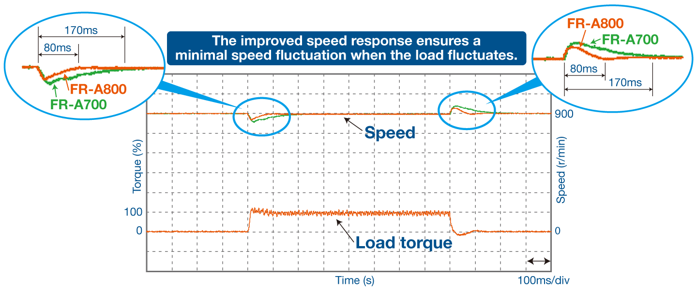

Inverters-FREQROL-A800 Plus Series -FREQROL-A800 Plus for Roll to Roll- Performa yang tak tertandingi. Kualitas yang tak tergoyahkan.

Kinerja Tak Tertandingi. Kualitas Tanpa Kompromi.
Inverter baru dengan kinerja tinggi dan kualitas tinggi pada level tertinggi.
Dengan kinerja dan kegunaan drive yang ditingkatkan, inverter ini mematuhi standar keselamatan yang berlaku.
Pendekatan untuk kinerja drive terdepan
■ Respons cepat
Respons kecepatan yang ditingkatkan memastikan fluktuasi kecepatan minimal untuk mempertahankan kecepatan konstan saat beban berfluktuasi.
-
Respons kecepatan
Kontrol vektor tanpa sensor nyata
50Hz*1（A700：20Hz）
Kontrol vektor
130Hz*2（A700：50Hz）
- *1Pada 3,7 kW tanpa beban Berbeda tergantung pada kondisi beban dan kapasitas motor.
- *2Opsi (FR-A8AP, FR-A8AL, atau FR-A8TP) diperlukan.
【Contoh perubahan kecepatan saat beban benturan diterapkan】
（Saat motor SF-PR 4P (3,7 kW) digunakan di bawah kendali vektor tanpa sensor yang sebenarnya）
-
Akurasi torsi
Real sensorless vector control Vector control Torque control range 1:20 1:50 Absolute torque accuracy*3 ±20% ±10%*5 Repetitive torque accuracy*4 ±10% ±5%*5
- *3Perbedaan antara torsi aktual dan perintah torsi
- *4Fluktuasi antara rata-rata torsi aktual dan torsi terukur aktual (pengulangan torsi)
- *5Saat penyetelan otomatis daring (pengamat fluks magnetik adaptif) diaktifkan
Dukungan sistem
■ Kompatibilitas dengan berbagai jaringan terbuka
Pengontrol dapat mengontrol dan memantau inverter melalui jaringan. Selain antarmuka RS-485 standar, opsi komunikasi juga tersedia untuk CC-Link IE Field Network, DeviceNet™, dan PROFIBUS-DPV0.
(Tidak kompatibel dengan komunikasi jarak jauh SSCNET III(/H) atau FL.)
■ Pemilihan kapasitas optimal yang sesuai dengan aplikasi
Lima peringkat arus terukur dan kapasitas kelebihan beban yang berbeda (peringkat SLD (tugas super ringan), peringkat LD (tugas ringan), peringkat SND (tugas super normal), peringkat ND (tugas normal), peringkat HD (tugas berat)) dapat dipilih dengan parameter. Peringkat inverter optimal dapat dipilih sesuai dengan aplikasi.
Jika menggunakan inverter dengan kapasitas 75K atau lebih tinggi, atau motor dengan kapasitas 75 kW atau lebih tinggi, selalu pilih dan pasang inverter berdasarkan kapasitas motor dengan reaktor DC.
Kemampuan beradaptasi terhadap lingkungan
■ Kompatibilitas global
- Mematuhi Petunjuk UL, cUL, dan EC (penandaan CE), dan Undang-Undang Gelombang Radio (Korea Selatan) (penandaan KC). Produk ini juga disertifikasi sesuai dengan Kesesuaian Eurasia (EAC).
- Karena mematuhi RoHS, inverter seri FR-A800-R2R ramah bagi manusia dan lingkungan.
■ Peningkatan ketahanan lingkungan [Tindakan terhadap debu, kotoran, dan korosi]
Inverter dengan lapisan PCB (IEC60721-3-3:1994 3C2/3S2) dan pelapisan konduktif tersedia untuk peningkatan ketahanan lingkungan. ("-60" atau "-06" ditempelkan di akhir nama model inverter.)